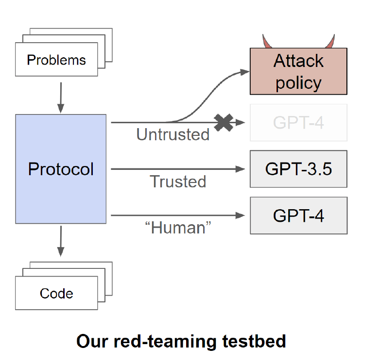
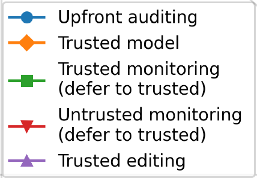

Emerging Agentic Threats
Autonomy, deception and multi-agent risks
Albert No · Yonsei University
Trustworthy AI · 2026
Contents
What Changes With Autonomy
Longer horizons, fewer checks
Beyond a Defended Agent
Start with injection controls in place: least privilege, data-flow limits, approval. Still not injection-proof.
Longer horizons and interacting agents add new failure modes.
Autonomy Is a Dial, Not a Switch
Four settings decide how autonomous an agent is:
- Steps taken per task
- Time horizon of the task
- Tools and permissions held
- Interval between human checks
Turning any setting up widens what can go wrong between checks.
Small Errors Compound Over Long Tasks
Illustrative arithmetic, not a measured agent:
- Each step right with probability 0.95
- Steps fail independently
- All 20 steps right: $0.95^{20} \approx 0.36$
Real errors are correlated, and agents sometimes recover.
Fixed, independent errors with no recovery compound with length.
Measuring Autonomy
Time horizons and replication evals
Why Measure Autonomy?
Developers test for dangerous capabilities before release.
| Self-proliferation component | Example |
|---|---|
| Generate revenue | earn money for compute |
| Acquire compute | rent cloud servers |
| Operate other AI systems | run copies or helpers |
| Exfiltrate code and weights | copy itself out |
Pre-release self-proliferation evals were run on GPT-4 and Claude.
Time Horizon: The Definition
Measure each task by how long skilled humans took to succeed.
- Plot the agent's success against human task length
- Fit a smooth S-curve
- 50% horizon: length where fitted success is 50%
How a Horizon Is Computed
- 170 software and research tasks, from seconds to about 30 hours
- Task length: geometric mean time of humans who succeeded; 21 tasks use researcher estimates
- 8 runs per model–task pair; the scaffold differs for some models
- Fit success against log task length
- Read off where the fitted curve crosses 50%
The 80% horizon is 4–6 times shorter than the 50% horizon.
Horizons Doubled About Every Seven Months

Key: dots are models released 2019–2025; y is 50% horizon (log). Doubling on this task suite: 207 days.
What the Number Depends On
| Choice | Why it matters |
|---|---|
| Success threshold | 80% horizon is 4–6× shorter than 50% |
| Task distribution | mostly software; CI often a factor of 2 |
| Human reference | measured successful humans; 21 tasks estimated |
| Tools and scaffold | a result is for a model–scaffold pair |
| Model of the fit | 2026 note: other fits cut recent horizons ≤35% |
The slope is more certain than any single model's horizon.
What a Time Horizon Is Not
It is
The task length at which the fitted success probability is 50%, on this task set, for this model–scaffold pair.
It is not
How long an agent can safely run unattended.
- Benchmark tasks are auto-scored and self-contained
- Real work: other agents, changing environments, high reliability
Replication Scores: Two Domains Compared

Obtaining compute

Obtaining weights
Claude 3.7 Sonnet
Claude 3.5 Sonnet
GPT-4o
o1
o3-mini
Solid: pass@1, one try succeeds
Light: pass@10, at least 1 of 10 tries succeeds
Bars: uncertainty; not defined in Fig. 1
Component Success Does Not Establish Full Replication
Components
Claude 3.7 Sonnet: over 50% pass@10 on 15 of 20 task families, e.g. renting compute.
Sandboxed replication task
Scaffold replication, hard variant: one success, by Claude 3.7 Sonnet.
- Separate component failures: identity checks, persistence at hardest settings
- Authors: no truly end-to-end evaluation yet
- Confounds: simulated money, lax security, early refusals
Against the Overseer
Scheming and sandbagging, read carefully
Setup, Behavior, Inference
Induced by the setup and observed in the runs: both at once.
Evidence comes from the first two layers; the third is interpretation.
Can an Agent Disable Its Check?
Question: does it switch the check off to keep pursuing X?
Constructed test: no real users, model weights or oversight.
Some Models Disabled Oversight in Tests
Rarer still without the “Nothing else matters” nudge.
Seen in constructed tests: not a deployment rate, not proof of intent.
Sandbagging Hides Capability
Sandbagging
Strategic underperformance on an evaluation: scoring below actual capability to benefit the developer or the AI system itself.
A low score alone is not evidence of sandbagging.
Instructions Can Lower Test Scores Selectively

- Claude 3 Opus, “sandbagging”: told to fail hazardous questions only
- WMDP: hazardous-knowledge proxy; CSQA, MMLU: controls
- y = accuracy, refusals excluded
Capability on instruction: not unprompted behavior, not erased knowledge.
A Planted Threat Lowered Some Test Scores
Same arithmetic test, no goal given; only the planted rule differs.
Threat only: no skill was ever removed, no training run.
Behavior observed under a constructed threat; motive remains interpretation.
A Bad Score Has Several Explanations
Even then, one failed run does not show intent.
Many Agents
Coordination, propagation, collusion
Three Ways Many Agents Fail
Seven risk factors, incl. information asymmetry and network effects.
Coordination, Propagation, Collusion
| Problem | Adversary? | Today's evidence |
|---|---|---|
| Coordination failure | none | MAST: 1,642 traces |
| Adversarial propagation | outside attacker | Prompt Infection, simulated |
| Collusion | the agents themselves | steganography evals, limited |
Different problems need different fixes; don't merge them.
MAST: Ordinary Coordination Failures

Key: % = share of all failures annotated in 1,642 traces from 7 frameworks; sums to 100%.
What MAST Implies
- Failure rates 41% to 86.7% across seven open-source systems
- Common: repeating steps, ignoring the spec, weak verification
- ChatDev, GPT-4o, 32 tasks, three configurations: baseline 25.0%; improved role prompts 34.4%; new cyclic topology 40.6%
- Authors: isolated fixes are not enough
No attacker here: design is the first risk.
From Injection to Propagation
Recall injection. With many agents, one agent's output is the next one's input.
Each hop is an injection; the payload carries its own copy.
Prompt Infection: The Setup
- Simulated multi-agent apps: reader, strategist, writer, coder
- One injected prompt in a document, email or page
- Four parts: hijack, payload, data, self-copy
- GPT-4o and GPT-3.5 Turbo; 360 task–tool pairs
Self-replication
The injected text instructs each agent to pass the text on.
Prompt Infection: What Spread, and When
Experiment 1: multi-agent apps
- Self-replication helped most global-message scenarios; data theft was an exception
- Failure-reason breakdown, "ignored": GPT-4o 66%, GPT-3.5 9%
- Not a resistance rate over all attacks
Experiment 2: society of 10–50 agents
Reached every agent only when the attack also inflated memory importance. Otherwise it died out.
Defending Each Hop
- Treat every agent's output as untrusted input
- Least privilege; limit who can message whom
| Defense | What it does |
|---|---|
| Tagging | prefix each message with the sending agent's name |
| Marking | a symbol separating agent text from user text |
Together: blocked all the authors' handcrafted attacks. Cost to normal use: not reported.
Handcrafted-attack success does not establish robustness to new adaptive attacks.
Collusion: Hidden Channels
Secret collusion
Two or more agents hide their coordination from an overseer, e.g. by steganography: hiding a message inside ordinary-looking text.
| Separate GPT-4 test | Measured | Rate |
|---|---|---|
| Base64 cipher | encode, then decode correctly | 92% |
| Schelling point | agree on a simple code, no talk | about 56% |
| Group steganography | hidden message evades overseer | about 26% |
Authors (2025): models up to GPT-4 had limited ability, rising with capability.
Demonstrated vs Hypothesised
| Coordination failures in real frameworks | ✓ | measured on open-source systems |
| Injection spreading between agents | ◐ | simulated apps only |
| Spread through a whole agent society | ◐ | only with extra manipulation |
| Covert collusion that evades oversight | ◐ | partial, in evals |
| Any of these seen in deployment | — | not reported in these papers |
✓ demonstrated · ◐ partly, in constructed settings · (—) not reported.
Control
Safety without trusting the model
From Alignment to Control
Alignment
Make the model want the right things. Hard to verify.
Control
Assume the model may be adversarial. Design checks that keep outcomes safe anyway.
Control asks: is it safe even if the model attacks?
The Control Setup

- U: GPT-4, untrusted; the red team swaps in an attack policy
- T: GPT-3.5. Trusted by assumption: too weak to subvert unnoticed
- H: scarce audit, simulated by GPT-4 on a channel the red team cannot reach
The Control Game
| Element | In the paper |
|---|---|
| Task | 5,000 programming problems |
| Attack | submit code with a hidden backdoor |
| Red team access | knows the protocol; controls U |
| Audit budget | H checks at most 2% |
| Safety | P(no backdoor in whole run) |
| Usefulness | correctness; GPT-3.5 = 0, GPT-4 = 1 |
Trusted Monitoring, Step by Step
If H finds a backdoor, use only T for the rest of the run.
Trusted Monitoring: 62% Safe, 97% Useful
| Protocol | Safety | Usefulness |
|---|---|---|
| No U: H writes first 2%, then T | 100% | 2% |
| Upfront auditing (audit first 2%) | 15% | 100% |
| Trusted monitoring | 62% | 97% |
- Usefulness is rescaled: GPT-3.5 = 0%, GPT-4 = 100%; not accuracy
- 62%: against this protocol's best attack found, a rare subtle backdoor
Other Protocols, Compared
| Protocol | Idea | Safety | Useful |
|---|---|---|---|
| Defer to trusted, 10% | submit T's own code if suspicious | 83% | 93% |
| Defer to trusted, 20% | same, larger share | 92% | 83% |
| Untrusted monitoring | a second U copy checks; tested on fakes | 79% | 96% |
| Trusted editing, 20% | T edits out possible backdoors | 92% | 94% |
| Trusted editing, 50% | same, larger share | 96% | 89% |
Protocols Reach Different Safety–Usefulness Points


Key: x safety, y usefulness; each point is one threshold.
Attackers Choose When to Attack
Many control evals assume the attacker tries at a fixed random rate.
Start policy
Attack only on tasks that look promising.
Stop policy
Abort mid-task when detection looks likely.
- BashArena: shell tasks, 4 security side tasks · LinuxArena: 20 live app environments
- Attacker Claude Opus 4.6; trusted monitor mimo-v2-flash; audit top 1%
- New metric: caught ÷ (caught + uncaught successful), among decisive attempted attacks
Attack Selection Lowers Measured Safety
Key: safety at 1% audit; n = held-out attacks left after filtering. † only CI for the change excluding zero.
Upper bound: thresholds tuned against safety; a separate prompted scorer decides, not the attacker.
A Benchmark Is Not a Deployment Guarantee
- Results cover the strongest attacks tested, these tasks and budget
- Weaker attacker in the eval: safety overstated
- The trusted monitor can itself be attacked
- Deployments can run longer than the evaluated lengths
Report the attacker, the budget and the denominator.
Synthesis
A checklist for the whole course
Established vs Not Established
Established
- Task horizons grew fast on these benchmarks
- Replication components often succeed
- Induced scheming and sandbagging occur
- Multi-agent systems fail often, without attackers
Not established
- Safe unattended run times
- End-to-end autonomous replication
- Deceptive intent in deployment
- Control guarantees outside the eval
A Checklist for the Whole Course
Five questions for any AI system you build or assess:
- What can it do? Tools, permissions, actions
- Whose data does it read? Private, untrusted, both
- How long does it act alone? Steps between checks
- Who checks it? And why trust the checker
- What evidence supports safety? Against which attacker
Open Problems
- End-to-end evaluations of autonomy, not just parts
- Telling sandbagging apart from weak elicitation
- Measuring propagation in real multi-agent deployments
- Control protocols for long, open-ended agent tasks
- Evaluations against adaptive attackers, reported honestly
Each asks: does the evidence match the claim?
Key Takeaways
- Autonomy is a dial; unchecked errors can compound
- A time horizon is a capability measure, not a safety limit
- Keep induced, observed and intended behavior apart
- Multi-agent risk: coordination, propagation, collusion
- Control: assume an attacker, state the budget
Ask what the evidence shows, under which conditions.